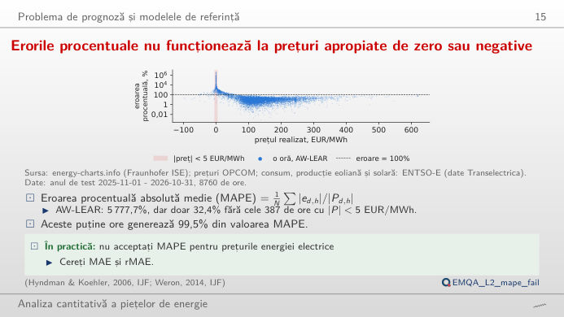
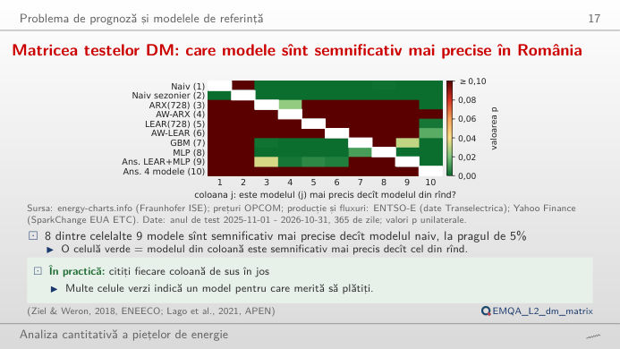
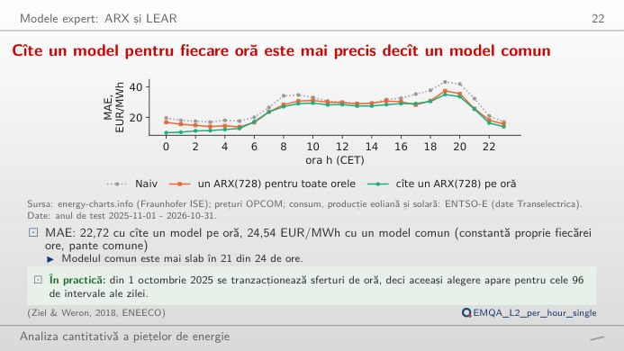
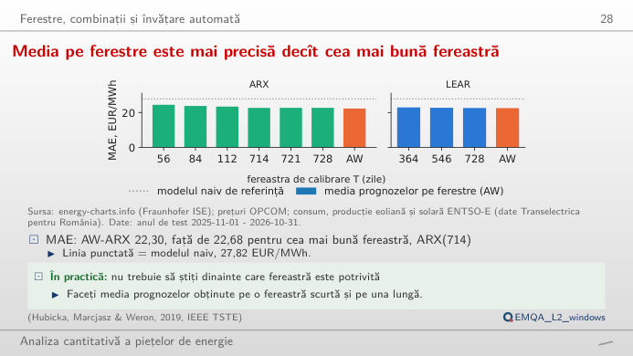
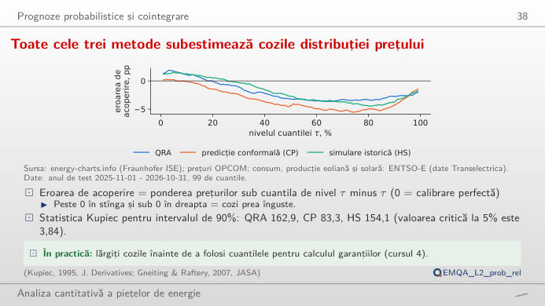
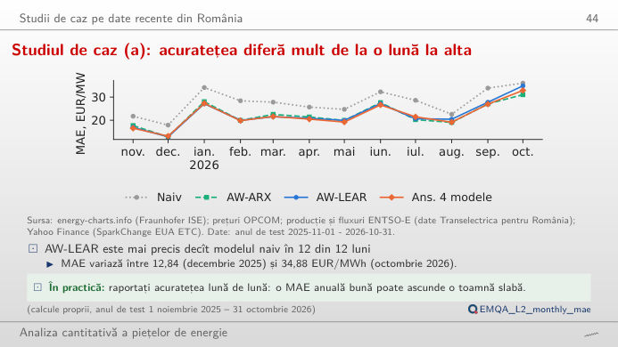

În stînga este slide-ul din curs, în dreapta aceeași figură, recalculată în browser din prognozele cursului cînd modificați un control. Butonul ▶ modifică parametrul principal pas cu pas. Anul de test: 1 noiembrie 2025 – 31 octombrie 2026 (365 de zile × 24 de ore, piața pentru ziua următoare din România, OPCOM PZU). Sub fiecare figură: o sinteză numerică, o întrebare pentru sală și Quantlet-ul cu codul figurii.
Problema de prognoză și modelele de referință · Modele expert: ARX și LEAR · Ferestre, combinații și învățare automată · Prognoze probabilistice și cointegrare · Studii de caz pe date recente din România
Problema de prognoză și modelele de referință
Erorile procentuale nu funcționează la prețuri apropiate de zero sau negative

Răspuns
Nu. Eroarea procentuală împarte la prețul efectiv, iar 387 de ore au |preț| sub 5 EUR/MWh (60 sînt exact zero, 195 negative). Aceste ore produc 99,5% din MAPE; fără ele, MAPE pentru AW-LEAR scade la 32,4%. Mutați cursorul: MAE și sMAPE aproape nu se schimbă, MAPE se prăbușește. Cu prețuri apropiate de zero, raportăm MAE, RMSE și MAE relativ (rMAE, MAE împărțit la MAE al prognozei naive).
Matricea testelor DM: care modele sînt semnificativ mai precise în România

Răspuns
Prima da, a doua nu. Testul DM folosește diferența zilnică a pierderilor d_t (media pe cele 24 de ore a |e_A| − |e_B|), cu varianța Newey–West (7 laguri): naiv față de AW-LEAR dă DM = 7,32, p unilateral < 0,001; AW-ARX față de AW-LEAR dă DM = −0,83, p = 0,80, deci AW-LEAR nu este mai precis decît AW-ARX. Schimbați pierderea în eroare pătratică sau numărul de laguri: concluzia pentru naiv față de AW-LEAR rămîne; pentru modele apropiate se poate schimba.
Modele expert: ARX și LEAR
Cîte un model pentru fiecare oră este mai precis decît un model comun

Răspuns
În 21 din cele 24 de ore. MAE pe an este 24,54 EUR/MWh, față de 22,72 pentru ARX(728) cu cîte o regresie pe oră: fiecare oră are propria dinamică (orele de noapte urmează îndeaproape ziua anterioară, orele solare depind mai mult de regenerabile). Erorile tuturor modelelor sînt maxime seara: AW-LEAR are cea mai slabă oră la 19:00 (34,52 EUR/MWh) și cea mai bună la 01:00 (9,47).
Ferestre, combinații și învățare automată
Media pe ferestre este mai precisă decît cea mai bună fereastră

Răspuns
Da. AW-ARX, media pe ferestrele de 56, 84, 112, 714, 721 și 728 de zile, are MAE 22,30 EUR/MWh, sub fiecare fereastră luată separat (cea mai bună: 714 zile, 22,68). Ferestrele scurte se adaptează repede la noile niveluri ale prețului, cele lungi estimează precis coeficienții; erorile lor nu sînt perfect corelate, deci media reduce eroarea. Debifați ferestre pentru a vedea ce combinații mai ajută. Pentru LEAR, media pe 364, 546 și 728 de zile (22,53) este și ea sub fiecare fereastră (cea mai bună: 728 de zile, 22,62).
Prognoze probabilistice și cointegrare
Toate cele trei metode subestimează cozile distribuției prețului

Răspuns
În 85,67% din ore, sub 90%: intervalul este prea îngust, iar testul Kupiec (un test al raportului de verosimilitate pentru ponderea orelor din afara intervalului) respinge acoperirea corectă (p < 0,001). Intervalul de 50% acoperă 47,3%. Graficul de fiabilitate arată, pentru fiecare nivel τ, ponderea prețurilor sub cuantilă minus τ, în puncte procentuale (pp): peste zero în coada inferioară și sub zero în coada superioară, deci prețurile extreme sînt mai frecvente decît se așteaptă modelul. Alegeți o oră: orele de seară au intervalele cele mai largi.
Studii de caz pe date recente din România
Studiul de caz (a): acuratețea diferă mult de la o lună la alta

Răspuns
AW-LEAR bate prognoza naivă în toate cele 12 luni; ansamblul (media AW-ARX, AW-LEAR, GBM și MLP) bate AW-LEAR în 8 din cele 12 luni. Nivelul erorii variază mult între luni: AW-LEAR are 12,84 EUR/MWh în decembrie 2025 și 34,88 în octombrie 2026. Treceți la MAE relativ: ordinea modelelor este mai stabilă decît nivelul erorilor.
Prețuri: OPCOM PZU (piața pentru ziua următoare din România), prin energy-charts.info (Fraunhofer ISE); ziua de livrare în ora Europei Centrale (CET/CEST), 24 de valori orare pe zi (prețurile pe 15 minute din 1 octombrie 2025 sînt mediate pe oră). Prognoze: modelele din Cursul 2, reestimate în fiecare zi a anului de test numai cu datele disponibile la închiderea ofertelor (Quantlets EMQA_L2_*). Abrevieri: MAE eroarea absolută medie, RMSE rădăcina erorii pătratice medii, MAPE eroarea procentuală absolută medie, sMAPE MAPE simetrică, ARX model autoregresiv cu variabile exogene, LEAR model autoregresiv estimat cu lasso, AW media pe ferestrele de calibrare, GBM gradient boosting, MLP perceptron multistrat, DM Diebold–Mariano, QRA medierea prin regresie cuantilică.